Isabella’s Assignments
CRIM 250: Statistics for the Social Sciences
Assignment 1
Collaborators: Isabella Werneck.
Due date: September 20th
Problem 1
Install the datasets package on the console below using install.packages("datasets"). Now load the library.
dat <- USArrestsLoad the USArrests dataset and rename it dat. Note that this dataset comes with R, in the package datasets, so there’s no need to load data from your computer. Why is it useful to rename the dataset?
Answer: It is useful to rename the dataset to avoid disturbing the original data. It also makes it easier to locate the dataset you are currently looking at.
Problem 2
Use this command to make the state names into a new variable called State.
dat$state <- tolower(rownames(USArrests))This dataset has the state names as row names, so we just want to make them into a new variable. We also make them all lower case, because that will help us draw a map later - the map function requires the states to be lower case.
List the variables contained in the dataset USArrests.
names(dat)## [1] "Murder" "Assault" "UrbanPop" "Rape" "state"Answer: The variables contained in USArrests are: Murder, Assault, Rape, and UrbanPop (number of people from urban areas).
Problem 3
What type of variable (from the DVB chapter) is Murder?
Answer: Murder is a categorical variable, since it is a form of categorizing groups of people, and it is non-numerical.
What R Type of variable is it?
Answer: In R, Murder is a character variable.
Problem 4
What information is contained in this dataset, in general? What do the numbers mean?
Answer: The USArrests dataset shows the rate of arrests per 100,000 residents in different US states in 1973. It divides the arrests by the crime: Murder, Assault, and Rape. The dataset also includes the number of people living in urban areas.
Problem 5
Draw a histogram of Murder with proper labels and title.
hist(USArrests$Murder, main = "Arrest for Murder in the US in 1973", xlab = "Murder Arrests per 100,000 people", ylab = "Frequency of US States")
Problem 6
Please summarize Murder quantitatively. What are its mean and median? What is the difference between mean and median? What is a quartile, and why do you think R gives you the 1st Qu. and 3rd Qu.?
summary(USArrests$Murder)## Min. 1st Qu. Median Mean 3rd Qu. Max.
## 0.800 4.075 7.250 7.788 11.250 17.400As shown above, the mean of the data set is 7.788 and the median is 7.250. The difference between the mean and the median is that mean is the average number of arrests, while the median is the middle point of the dataset. This means that half of the dataset is under 7.250, and the other half is over 7.250. A quartile divides a dataset in four parts, each containing 25% of the data. The interquartile range (IQR) contains the middle 50% of the data, and it is determined by the upper bound of the 1st Qu. and the lower bound of the 3rd Qu. The 2nd Qu, which marks the middle of the IQR, is the dataset’s median point. R gives us the 1st Qu. and 3rd Qu. because the IQR is important for determining how skewed the distribution of the dataset is in relation to the median It is also useful in giving you an overview of where the values lie.
Problem 7
Repeat the same steps you followed for Murder, for the variables Assault and Rape. Now plot all three histograms together. You can do this by using the command par(mfrow=c(3,1)) and then plotting each of the three.
#Histogram for assault arrests
hist(USArrests$Assault, main = "Arrest for Assault in the US in 1973", xlab = "Assault Arrests per 100,000 people", ylab = "Frequency of US States")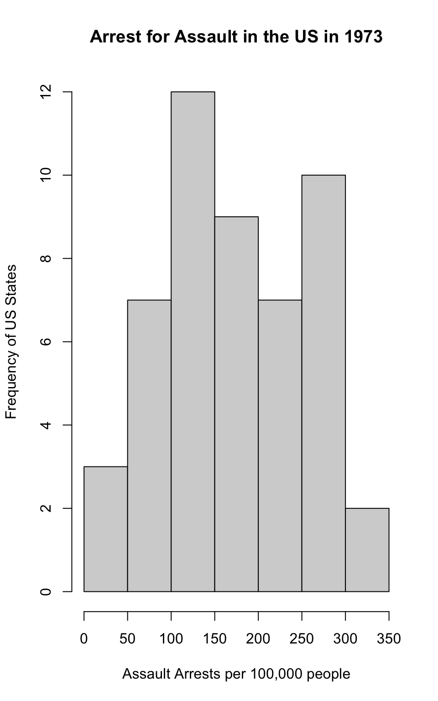
#Histogram for rape arrests
hist(USArrests$Rape, main = "Arrest for Rape in the US in 1973", xlab = "Rape Arrests per 100,000 people", ylab = "Frequency of US States")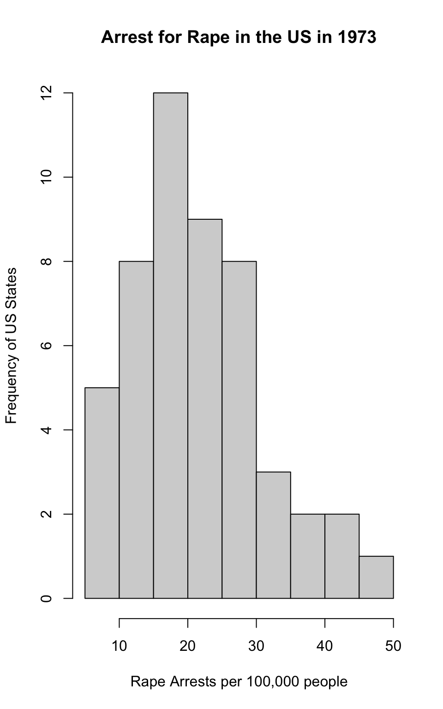
#Histograms for `Murder`, `Assault`, and `Rape`
par(mfrow=c(3,1))
hist(USArrests$Murder, main = "Arrest for Murder in the US in 1973", xlab = "Murder Arrests per 100,000 people", ylab = "Frequency of US States")
hist(USArrests$Assault, main = "Arrest for Assault in the US in 1973", xlab = "Assault Arrests per 100,000 people", ylab = "Frequency of US States")
hist(USArrests$Rape, main = "Arrest for Rape in the US in 1973", xlab = "Rape Arrests per 100,000 people", ylab = "Frequency of US States")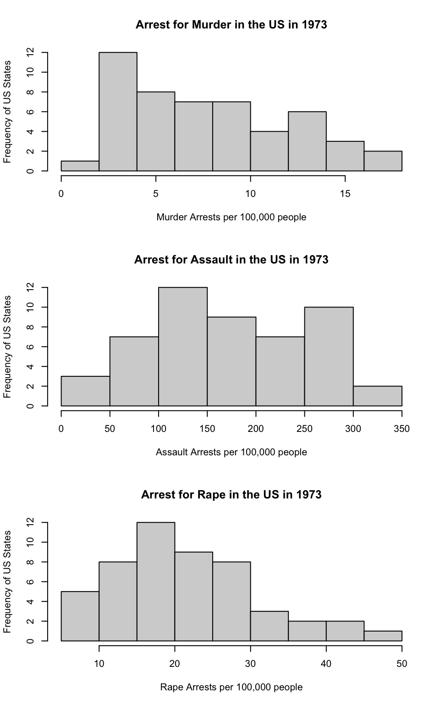
What does the command par do, in your own words (you can look this up by asking R ?par)?
Answer: The command par is used to set graphical parameters.
What can you learn from plotting the histograms together?
Answer: Plotting histograms together is good for comparing results, specifically in comparing how skewed each graph is. You can tell from the graph, for example, that while the rape and murder graphs are more right-skewed, the assault graph is more skewed towards the right.
Problem 8
In the console below (not in text), type install.packages("maps") and press Enter, and then type install.packages("ggplot2") and press Enter. This will install the packages so you can load the libraries.
Run this code:
# install.packages("maps")
# install.packages("ggplot2")
library('maps')
library('ggplot2')
ggplot(dat, aes(map_id=state, fill=Murder)) +
geom_map(map=map_data("state")) +
expand_limits(x=map_data("state")$long, y=map_data("state")$lat)
What does this code do? Explain what each line is doing.
Answer: This code creates a map of US States and their arrest rates for murder in 1973. The first line (ggplot...) establishes the variables: US States and murder rates. It also says that the color fill of the map will represent murder rates. The second line identifies the dataset for the map, and the third establishes the dimensions for the map.
\[\\[2in]\]
Assignment 2
Problem 1
#setwd("/Users/isabellawerneck/Desktop/RStudio Data/Assignment 2")
dat <- read.csv(file = 'dat.nsduh.small.1.csv')What are the dimensions of the dataset?
dim(dat)## [1] 171 7#View(dat)Answer: There are 7 columns and 171 rows. In other words, 7 variables and 171 respondents.
Problem 2
names(dat)## [1] "mjage" "cigage" "iralcage" "age2" "sexatract" "speakengl"
## [7] "irsex"Describe the variables in the dataset.
Answer: - Age when first used marijuana/hashish (mjage): continuous quantitative variable - Age when first started using cigarettes everyday (cigage): continuous quantitative variable - Age when first used alcohol (iralcage): continuous quantitative variable - Age of respondents organized in categories (age2): categorical ordinal variable - Gender of respondents (irsex): categorical nominal variable - Sexual attraction organized in categories (sexatract): categorical nominal variable - How well the respondents speak English (speakengl): categorical ordinal variable
What is this dataset about? Who collected the data, what kind of sample is it, and what was the purpose of generating the data?
Answer: The dataset is about 171 individuals living in the Unites States and the age they began using marijuana, alcohol, and cigarettes. The data also includes the individuals’ age, gender, sexual orientation, and whether they speak English. The data was collected in 2019 by the National Survey of Drug Use and Health, a nation-wide study sponsored by the Substance Abuse and Mental Health Services Administration. The dataset includes only a small sample of the survey.
The purpose of generating this data is to create a dataset representative of the US population. This kind of information is useful for addressing social and health problems in the United States, such as drug addiction.
Problem 3: Age and Gender
What is the age distribution of the sample like? Make sure you read the codebook to know what the variable values mean.
hist(dat$age2, main="Age Distribution in 2019 NSDUH Survey", xlab="Age Category", ylab = "Frequency")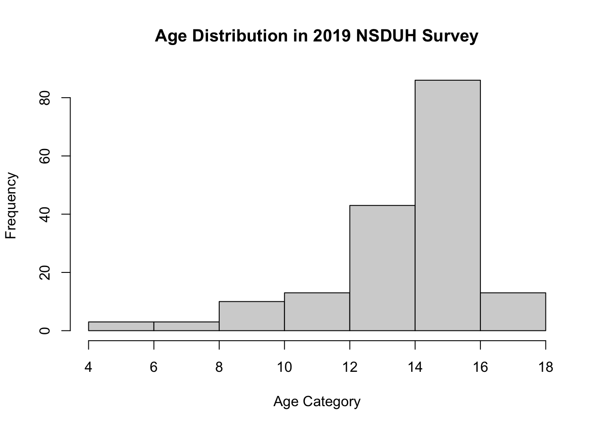
Answer: The dataset presents the individuals’ ages through categories that encompass an age range. The ages range from 12 to 65 years old or older, categorized from 1 to 17. The most common ages, as seen above, belong to category 15, which includes ages between 35 and 49 years old.
Do you think this age distribution representative of the US population? Why or why not?
Answer: According to “Statista”, the age distribution of the US in 2020 is the following: 18.37% are ages 0-14, 65% are ages 15 to 64, and 16.63% are 65 and older. The age distribution in the data set is consistent with this information, since the graph is left-skewed and the most frequent ages lie between categories 12 and 16. Another website, “KFF”, shows that the biggest demographic in the US in 2019 was ages 35-45, which is also consistent with the dataset. It is important to note that since the study only considers individuals aged 12 or older, it cannot fully represent the age distribution in the US.
Is the sample balanced in terms of gender? If not, are there more females or males?
table(dat$irsex)##
## 1 2
## 91 80Answer: 1 represents males and 2 represents females. There are 11 more males than females, but the sample remains relatively balanced in terms of gender.
Use this code to draw a stacked bar plot to view the relationship between sex and age. What can you conclude from this plot?
tab.agesex <- table(dat$irsex, dat$age2)
barplot(tab.agesex,
main = "Stacked barchart",
xlab = "Age category", ylab = "Frequency",
legend.text = rownames(tab.agesex),
beside = FALSE) # Stacked bars (default)) Answer: I can conclude that most of the age categories are equal in gender, including categories 4, 10, 11, 12, 13, and 15. However, two of the younger categories (6 and 7) had more males, as well as the last two categories (16 and 17). These differences do not seem to form a pattern.
Answer: I can conclude that most of the age categories are equal in gender, including categories 4, 10, 11, 12, 13, and 15. However, two of the younger categories (6 and 7) had more males, as well as the last two categories (16 and 17). These differences do not seem to form a pattern.
Problem 4
For which of the three substances included in the dataset (marijuana, alcohol, and cigarettes) do individuals tend to use the substance earlier?
#Summary of age when first used marijuana/hashish
summary(dat$mjage)## Min. 1st Qu. Median Mean 3rd Qu. Max.
## 7.00 14.00 16.00 15.99 17.50 35.00#Summary of alcohol age of first use
summary(dat$iralcage)## Min. 1st Qu. Median Mean 3rd Qu. Max.
## 5.00 13.00 15.00 14.95 17.00 23.00#Summary of age when first started smoking cigarettes everyday
summary(dat$cigage)## Min. 1st Qu. Median Mean 3rd Qu. Max.
## 10.00 15.00 17.00 17.65 19.00 50.00Answer: According to the summary of the dataset, individuals tend to use alcohol earlier than cigarettes or marijuana/hashish. The mean of first-time use age for alcohol is 14.95, while the mean ages for marijuana/hashish and cigarettes are 15.99 and 17.65 respectively. The minimum, median, and max of the three are also consistent with this - alcohol has the lowest ages for all of them. This suggests that individuals tend to start using alcohol earlier than cigarettes or marijuana/hashish.
Problem 5: Sexual orientation
What does the distribution of sexual attraction look like? Is this what you expected?
counts <- table(dat$sexatract)
barplot(counts, main="Sexual Orientation of Individuals in NSDUH 2019 Survey", xlab="Sexual Orientation Categories", ylab = "Frequency")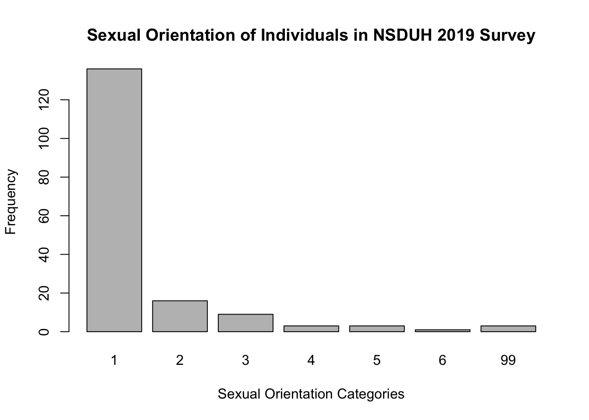
The Sexual Orientation categories are as follows: 1: I am only attracted to the opposite sex 2: I am mostly attracted to the opposite sex 3: I am equally attracted to males and females 4: I am mostly attracted to the same sex 5: I am only attracted to the same sex 6: I am not sure 99: Legitimate skip
Answer: The distribution of sexual orientation is highly skewed to the right. The first category, which represents heterosexual individuals, has the highest frequency. It represents the vast majority of participants of this survey. I would say this is close to what I imagined. Most individuals today are heterosexuals, even though the number of members of the LGBTQ+ community is increasing over the years. It is also important to note that an individual’s answer to this question might not be truthful; homophobia is still very common and present in the United States, and that might discourage individuals from answering to the survey truthfully, even if the survey is anonymous. However, even if all participants told the truth about their sexual orientation, I believe that the number of heterosexuals would still be predominant in the data.
What is the distribution of sexual attraction by gender?
counts <- table(dat$irsex, dat$sexatract)
barplot(counts, main= "Sexual Orientation vs Gender of Individuals in 2019 NSDUH Survey ", xlab="Sexual Orientation Categories", ylab= "Frequency")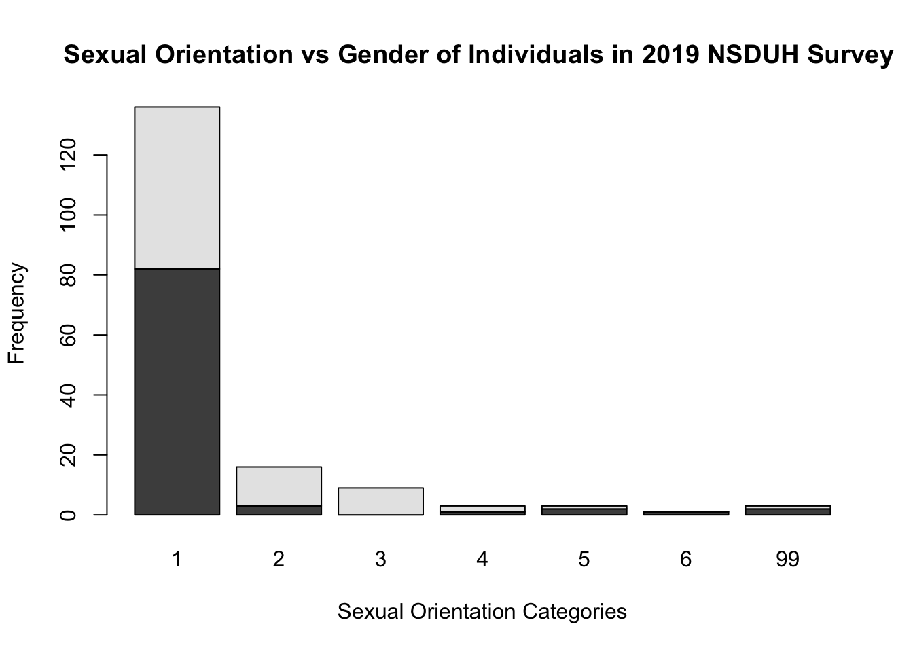
Answer: The majority of heterosexuals are male, while there is a female predominance in categories 2 and 3, which represent individuals who are, to some extent, attracted to the opposite sex. Category 4 is split evenly between males and females and there is a male predominance in categories 5 and 6. More males also refrained from stating their sexual orientation.
Problem 6: English Speaking
What does the distribution of English speaking look like in the sample? Is this what you might expect for a random sample of the US population?
counts <- table(dat$speakengl)
barplot(counts, main="Self-Evaluation of English Fluency of Individuals in NSDUH 2019 Survey", xlab="English Fluency Categories", ylab = "Frequency")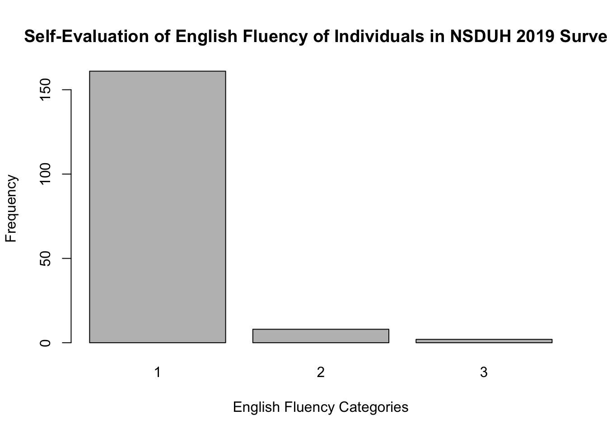
Answer: The grand majority of the participants responded “1”, which means they speak English very well. Categories 2 and 3, which correspond to speaking English well and not well, have significantly less people. This is what I would expect from a random sample of the US population since there are many immigrants living in the country, some of which don’t speak fluent English.
Are there more English speaker females or males?
counts <- table(dat$irsex, dat$speakengl)
barplot(counts, main= "Gender vs English Fluency of Individuals in 2019 NSDUH Survey ", xlab="English Fluency Categories", ylab= "Frequency")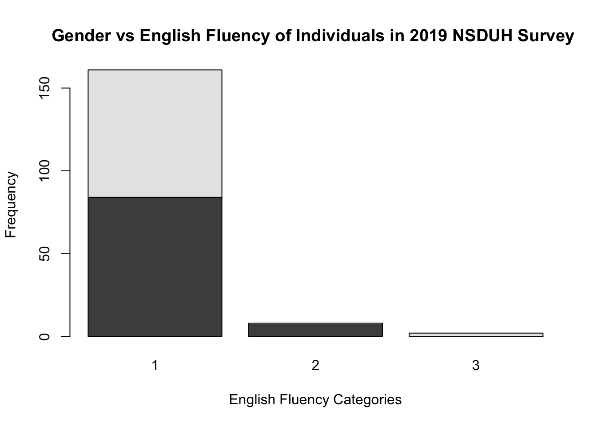
Answer: There seems to be an equal number of males and females in category 1, which represents individuals who speak English very well. There are significantly more males in category 2, which represents individuals who speak English well. Lastly, category 3, which represents individuals who don’t speak English well, has significantly more females. Though there is an equal number of males and females in category 1, category 2 has more males and category 3 only has females. Therefore, there are more males who speak “good” English than females. However, it is important to keep in mind that these results come from self-evaluation rather than English-fluency tests, making the categories completely arbitrary. They might provide an inaccurate representation of the US population.
Works Cited: https://www.kff.org/other/state-indicator/distribution-by-age/?currentTimeframe=0&sortModel=%7B%22colId%22:%22Location%22,%22sort%22:%22asc%22%7D https://www.statista.com/statistics/270000/age-distribution-in-the-united-states/
Assignment 3
Collaborators: Niko Amber
The dataset used is from a textbook by Brian S. Everitt about crime in the US in 1960. The data originate from the Uniform Crime Report of the FBI and other government sources. The data for 47 states of the USA are given.
Dataset codebook:
R: Crime rate: # of offenses reported to police per million population
Age: The number of males of age 14-24 per 1000 population
S: Indicator variable for Southern states (0 = No, 1 = Yes)
Ed: Mean of years of schooling x 10 for persons of age 25 or older
Ex0: 1960 per capita expenditure on police by state and local government
Ex1: 1959 per capita expenditure on police by state and local government
LF: Labor force participation rate per 1000 civilian urban males age 14-24
M: The number of males per 1000 females
N: State population size in hundred thousands
NW: The number of non-whites per 1000 population
U1: Unemployment rate of urban males per 1000 of age 14-24
U2: Unemployment rate of urban males per 1000 of age 35-39
W: Median value of transferable goods and assets or family income in tens of $
X: The number of families per 1000 earning below 1/2 the median income
We are interested in checking whether the reported crime rate (# of offenses reported to police per million population) and the average education (mean number of years of schooling for persons of age 25 or older) are related.
Problem 1
How many observations are there in the dataset? To what does each observation correspond?
library(readr)
library(knitr)
dat.crime <- read_delim("crime_simple.txt", delim = "\t")## Rows: 47 Columns: 14## ── Column specification ────────────────────────────────────────────────────────
## Delimiter: "\t"
## dbl (14): R, Age, S, Ed, Ex0, Ex1, LF, M, N, NW, U1, U2, W, X##
## ℹ Use `spec()` to retrieve the full column specification for this data.
## ℹ Specify the column types or set `show_col_types = FALSE` to quiet this message.Answer: There are 47 observations. Each observation corresponds to an American state.
Problem 2
Draw a scatterplot of the two variables. Calculate the correlation between the two variables. Can you come up with an explanation for this relationship?
plot(dat.crime$Ed, dat.crime$R, main = "Relationship between reported crime rate and average education in American states", xlab = "Mean years of schooling times 10", ylab = "Offences reported to police per million population", cex.main=0.8, cex.lab=0.8, col="blue")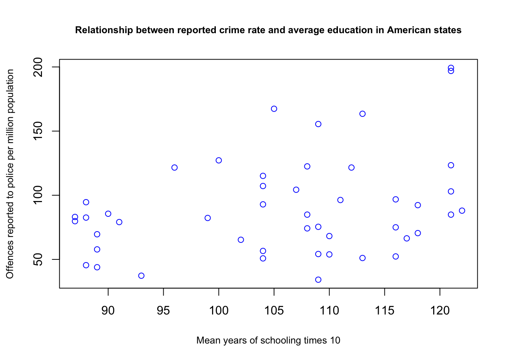
cor(dat.crime$Ed, dat.crime$R)## [1] 0.3228349Answer: There is a low positive correlation between the variables since the number is lower than 0.95 and a positive number. Though it is difficult to draw conclusions on this scatterplot from solely these results, I would guess that it means that more educated people are more likely to report a crime.
Problem 3
Regress reported crime rate (y) on average education (x) and call this linear model crime.lm and write the summary of the regression by using this code, which makes it look a little nicer {r, eval=FALSE} kable(summary(crime.lm)$coef, digits = 2).
crime.lm <- lm(formula = dat.crime$R ~ dat.crime$Ed, data = (dat.crime))
kable(summary(crime.lm)$coef, digits = 2)| Estimate | Std. Error | t value | Pr(>|t|) | |
|---|---|---|---|---|
| (Intercept) | -27.40 | 51.81 | -0.53 | 0.60 |
| dat.crime$Ed | 1.12 | 0.49 | 2.29 | 0.03 |
Problem 4
Are the four assumptions of linear regression satisfied? To answer this, draw the relevant plots. (Write a maximum of one sentence per assumption.)
1. Linearity assumption
plot(dat.crime$Ed, crime.lm$residuals, ylim = c(-15, 15), main = "Residuals vs. X", ylab = "Residuals", xlab = "X, Mean years of schooling times 10", col="red")
abline(h=0, lty="dashed")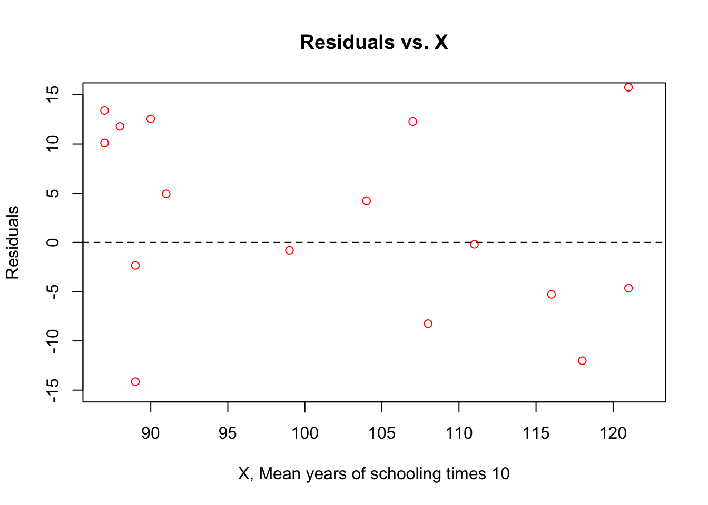
Answer: The linearity assumption is satisfied because there is no pattern in the scatterplot of the residuals vs X, so the scatterplot of X and Y is linear.
2. Independence assumption
plot(dat.crime$Ed, crime.lm$residuals, ylim = c(-15, 15), main = "Residuals vs. X", ylab = "Residuals", xlab = "X, Mean years of schooling times 10", col="red")
abline(h=0, lty="dashed")
Answer: The independence assumption is satisfied since there are no irregularities or clumps in the scatterplot above, which means that the errors are independent from each other.
3. Equal variance assumption
plot(crime.lm, which = 3)
Answer: The scale-location scatterplot does not show significant trends, which means that the residuals have constant variance and the assumption is satisfied.
4. Normal population assumption
plot(crime.lm, which = 2, col="blue")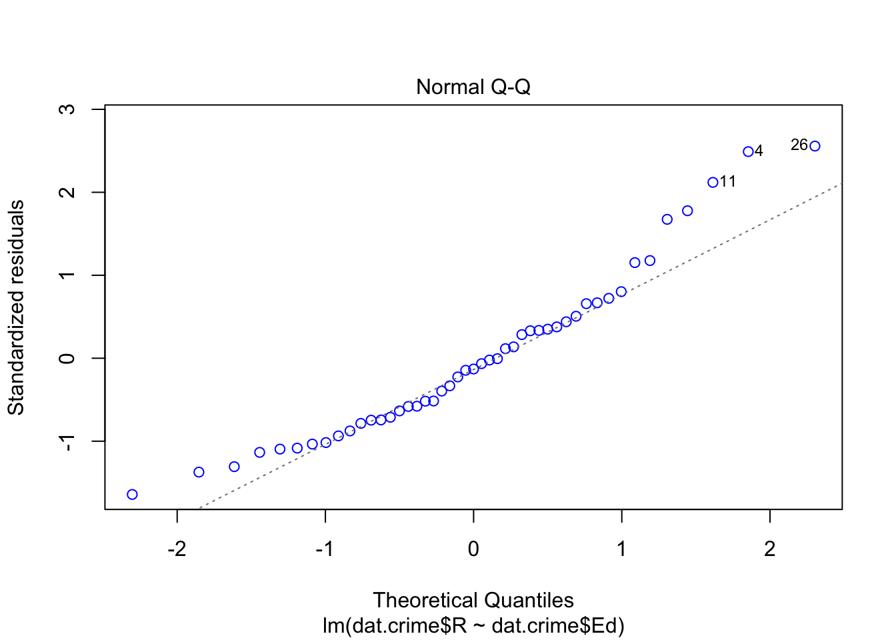
Answer: The scatterplot is light-tailed, which means that it is not evenly distributed.
Problem 5
Is the relationship between reported crime and average education statistically significant? Report the estimated coefficient of the slope, the standard error, and the p-value. What does it mean for the relationship to be statistically significant?
#dat.crime.c = scale(dat.crime, center = TRUE, scale = FALSE) #scaling the data
summary(crime.lm)##
## Call:
## lm(formula = dat.crime$R ~ dat.crime$Ed, data = (dat.crime))
##
## Residuals:
## Min 1Q Median 3Q Max
## -60.061 -27.125 -4.654 17.133 91.646
##
## Coefficients:
## Estimate Std. Error t value Pr(>|t|)
## (Intercept) -27.3967 51.8104 -0.529 0.5996
## dat.crime$Ed 1.1161 0.4878 2.288 0.0269 *
## ---
## Signif. codes: 0 '***' 0.001 '**' 0.01 '*' 0.05 '.' 0.1 ' ' 1
##
## Residual standard error: 37.01 on 45 degrees of freedom
## Multiple R-squared: 0.1042, Adjusted R-squared: 0.08432
## F-statistic: 5.236 on 1 and 45 DF, p-value: 0.02688Answer: The relationship is statistically significant since there are no asterisks for the intercept and only one for the slope. The estimated coefficient of the slope is 1.1161, the standard error is 37.01, and the p-value is 0.02688. The small p-value means we should reject the null hypothesis because it shows that there is a significant relationship between reported crime and average education.
Problem 6
Problem 7
Can you conclude that if individuals were to receive more education, then crime will be reported more often? Why or why not?
Answer: It is a possibility that by increasing education, crime would be reported more often. The results of the data show that there is a positive correlation between the two variables, and a linear regression model works to demonstrate this relationship. However, correlation does not necessarily mean causality. There could be other factors involved in this trend that we are not aware of that are causing the correlation that we are seeing. So, in order to reach this conclusion, we should look at the other variables in the dataset, like per capita expenditure on police by state and local government, labor force participation rates, and the number of non-whites per 1000 people. All of these could have an effect on crime reports.